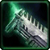
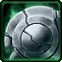

- Stats
- Abilities/Upgrades
- Strategy
- Lore
- Related

Armor: 0
Mineral Repair Cost:
 12.5
12.5Gas Repair Cost:
 0
0Repair Time:
 17
17 0/0 0 per second
0/0 0 per secondDamage: 5
Attacks: 1
Cooldown: 1.5
Targets: Ground only
Attack Range: 0.1 (Melee)
Acceleration: 2.5
Collision Radius: 0.375
Requirements: Levels 2-3 requires Armory
| Level |  Level 1 |  Level 2 Level 2 |  Level 3 Level 3 |
| Minerals | 100 | 175 | 250 |
| Vespene Gas | 100 | 175 | 250 |
| Time | 160 | 190 | 220 |
| Damage Bonus | 0 | 0 | 0 |
| Total Damage | 5 | 5 | 5 |
50Vespene Cost:
0Supply:
 1
1Produced From: Command Center Build Time:
17Requirements: Command Center
Medivac Size: 1
Bunker Size: 1
Unit Type: Light, Biological, Mechanical, Ground
Requirements: Levels 2-3 requires Armory
| Level |  Level 1 |  Level 2 Level 2 |  Level 3 Level 3 |
| Minerals | 100 | 175 | 250 |
| Vespene Gas | 100 | 175 | 250 |
| Time | 160 | 190 | 220 |
| Armor Bonus | +1 | +2 | +3 |
| Total Armor | 1 | 2 | 3 |
| Icon | Minerals | Vespene Gas | Research Time | Researched At |
| 0 | 0 | 0 | Already Researched |
Minerals:
Varies*Vespene Gas:
Varies*Duration:
Varies *Range: 0.1
Information: This allows the worker to repair mechanical units and structures.
This ability can be set to Auto-Cast, which is done by right clicking the icon. This will have the S.C.V. automatically repair nearby units or structures.
* The cost and duration of a repair is based on the unit or structure that is being repaired. Repairing a unit/structure from 1 health to maximum costs 25% of the total unit/structure cost. Time needed to repair is also dependent on its build time by 100%.
* Here is an example of the repair time and costs. A unit cost 200 minerals and 200 gas and took 60 seconds to build, a the unit has taken half its health in damage. The repair cost would be 25 minerals and 25 gas, and would take 30 seconds to do so.
* Structure repair costs are the same, but the price/time could be higher if the building is on fire. Since all Terran buildings receive damage when they are below 33% health, workers must repair the constant damage until the building is back above 33% health.
* Buildings that do not cost anything like the Auto-Turret are considered to have a base cost of 100 minerals and a 60 second build time for repair reasons.
* Adding multiple SCVs or MULEs does not reduce the cost, only the time needed to repair.
| Icon | Minerals | Vespene Gas | Research Time | Researched At |
 | 0 | 0 | 0 | Already Researched |
Information: This allows the worker to gather Minerals and Vespene Gas.
| Icon | Minerals | Vespene Gas | Research Time | Researched At |
| 0 | 0 | 0 | Already Researched |
Information: This allows the unit to create basic structures.
| Icon | Minerals | Vespene Gas | Research Time | Researched At |
| 0 | 0 | 0 | Already Researched |
Information: This allows the unit to create advanced structures.
If you have any suggestions for more strategies, go ahead and post on the forums 'here'!
+1 Weapons vs Zerglings
When Zealots have a +1 weapon advantage versus Zerglings, they will kill Zerglings in two attacks instead of three. This makes Zealots very effecient against Zerglings until the zerg catches up in armor upgrades.
Because of this, there are a handful of timing attack that take advantage of the effecient +1 weapon zealots, forcing the zerg to make spines, roaches, or some other unit than zerglings unless the zerg wants to trade inefficiently.
+1 Weapons vs Zerglings
Sum text about how gosu this is
+1 Weapons vs Zerglings
Sum text about how gosu this is
- Overview
The T-280 SCV is used to construct and maintain everything from remote outposts to space platforms as well as harvest resources. They are used by both military and civilian interests throughout the Koprulu Sector for their versatility and reliability. During the reign of the Terran Confederacy, volunteering to pilot an SCV appeared to be an alternative to military service. The PEB (Preferred Experience Base) was hostile environment engineering, with combat experience a plus.
The T-280 model became prominent for its performance during the construction of Tarsonis' space platforms. It was widely adopted and became a staple in terran engineering by 2489 and is used for general resconstruction efforts. The T-280 stands just over twelve feet tall. It is equipped with fusion cutters and plasma welders.
Within a few months of the end of the Brood War, a new SCV model had been introduced, albeit still retaining T-280 designation. It features improved motivators, allowing smoother operations.
Source Information
Text information from the Starcraft Wiki.
Photo 1 created by Saejin Oh. Copyright: UDON Entertainment.
Photo 2 created by Samwise Didier. Copyright: Blizzard Entertainment.
| Terran |
| Units |
| Command Center | SCV | Mule |
| Barracks | Marine | Marauder | Ghost | Reaper |
| Factory | Hellion | Siege Tank | Thor |
| Starport | Medivac | Viking | Banshee | Raven | Battlecruiser |
| Structures |
| Basic Buildings | Command Center | Orbital Command | Supply Depot | Refinery |
| Defensive Buildings | Planetary Fortress | Bunker | Missile Turret | Sensor Tower |
| Infantry Buildings | Barracks | Engineering Bay | Ghost Academy |
| Mechanical Buildings | Factory | Starport | Armory | Fusion Core |
| Add-ons/Spawned | Auto-Turret | Point Defense Drone | Tech Lab | Reactor |